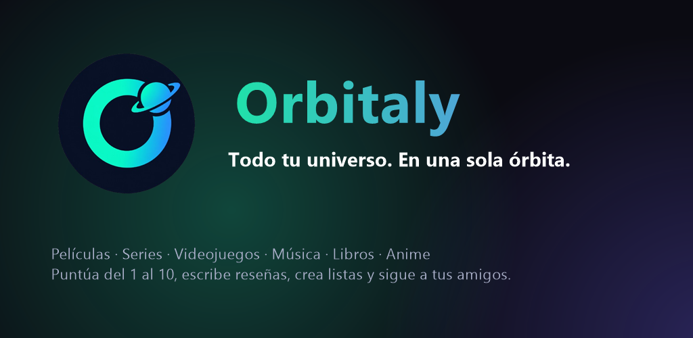

Proyecto de Jose Antonio Cuerda
Todo lo que ves, juegas y escuchas
en un solo perfil
Cine, series, videojuegos, música, libros y anime. Puntúa del 1 al 10, escribe reseñas, crea listas y descubre lo que le gusta a la gente a la que sigues.

Qué puedes hacer
Películas y series
Estrenos, clásicos, reparto, tráilers y dónde verlas en tu país.
Videojuegos
Lanzamientos, mejor valorados y por plataforma.
Música
Artistas, discografías completas y fragmentos de 30 segundos.
Libros
Novedades, clásicos y autores, con reseñas de la comunidad lectora.
Anime
En emisión, más populares y mejor valorados.
Reseñas y listas
Notas del 1 al 10, reseñas y listas públicas o privadas.
Para ti
Recomendaciones que aprenden de tus gustos.
Social
Feed, mensajes privados y perfiles para seguir a tus amigos.
Cómo está hecho
Aplicación full-stack con React y TanStack Start (renderizado en servidor), Supabase (PostgreSQL con seguridad por filas, autenticación y tiempo real), Tailwind CSS y Capacitor para Android. Conecta en tiempo real con TMDB, IGDB, Deezer, Apple Music, Spotify, Google Books, Open Library, Kitsu y AniList, con búsqueda por relevancia, caché y límites de peticiones. Interfaz en 9 idiomas.